Coup de main
Une main de marionnette cherche à se libérer mais la liberté a un prix.Breakdown
Modélisation
Pour la partie modélisation, j'ai pris une référence et j'ai commencé à faire l'aspect général de la main avec des formes basiques et des primitives. Ensuite, j'ai sculpté les différentes parties de la main à partir de ces bases avant de faire la topologie.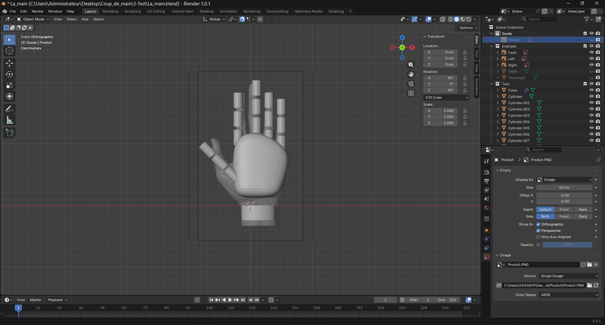
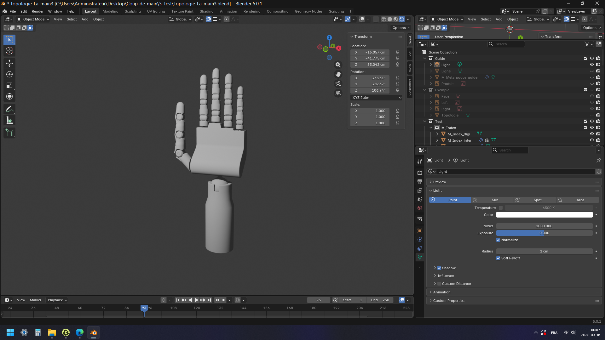
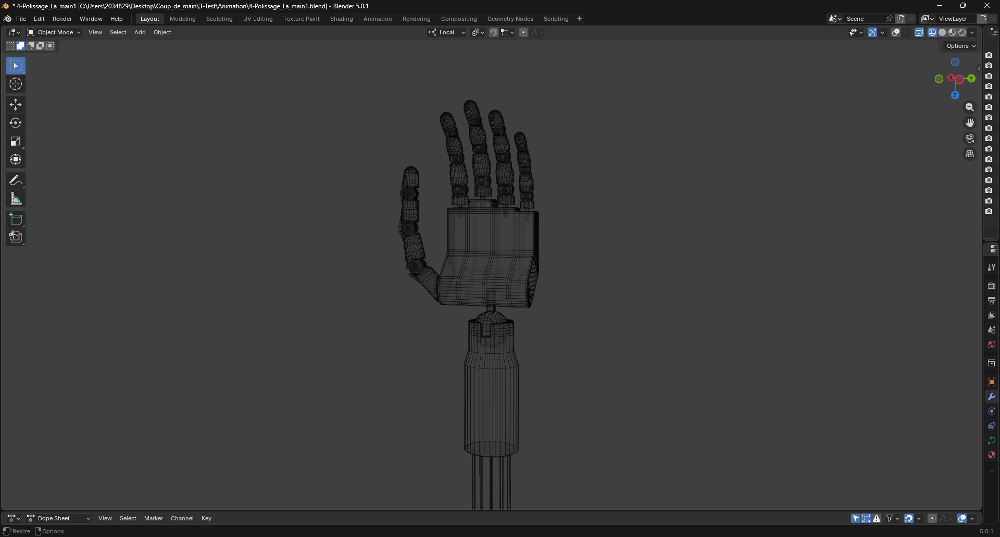
Rigging
J'ai tout d'abord pensé à faire un rigging basé sur le mouvement naturel de la main avant de commencer à faire les squelettes. Chaque partie de la main est contrainte par une influence qui est de 100%, il y a donc pas de déformation. Les doigts ont des contraintes de rotation et ils se manipulent seulement à la base. Par exemple, si le contrôleur de l'index bouge, les autres phalanges suivent le mouvement en retard. Seules les parties de la pouce peuvent bouger indépendemment. Pour les fils, je les ai contraint avec des crochets à leurs extrémités pour qu'ils puissent se déformer quand les squelettes sont déplacés. J'ai ensuite mis des contrôleurs avec des couleurs différentes pour pouvoir les différencier. Seul le contrôleur du master se distingue avec ses flèches.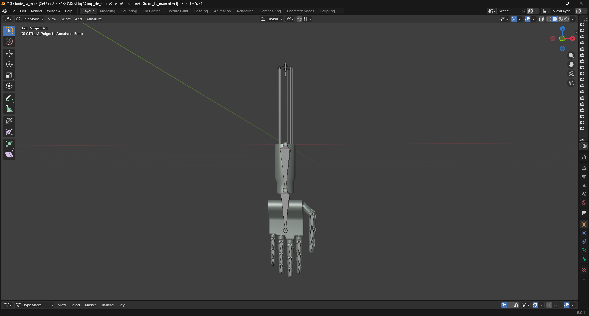
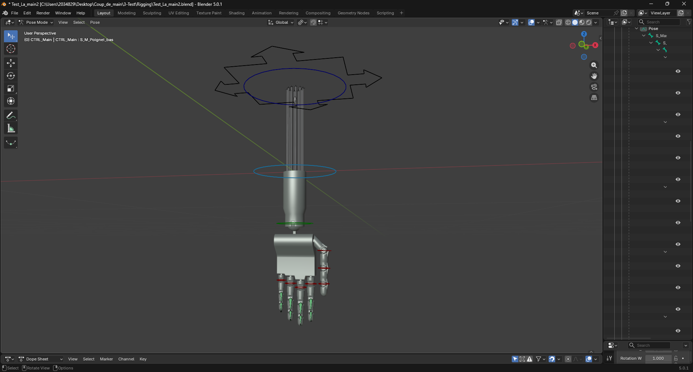
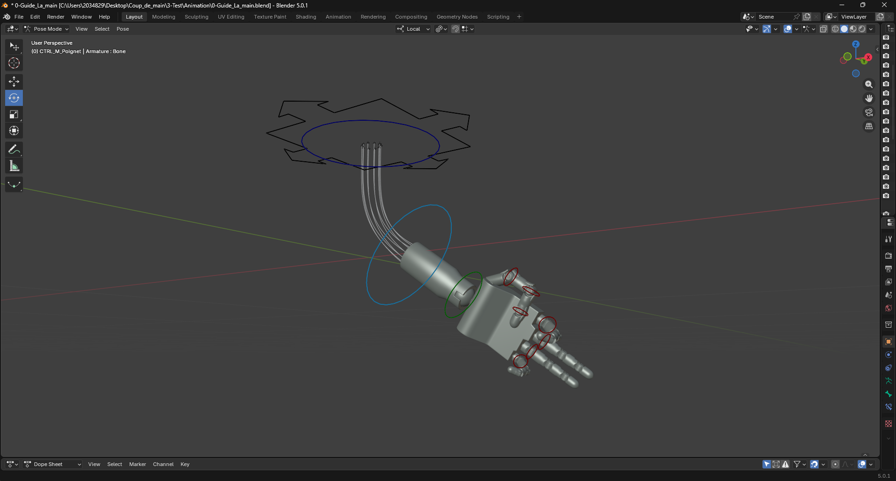
Texture procédurale
Pour la texture, j'ai utilisé la méthode procédurale pour la faire. J'ai fais le choix de faire un style assez lisse. J'ai mis pour les fils un metallic peu élevé et un roughness très élevé. Pour la surface de la main, c'est le contraire. Les joints ont juste une couleur différente.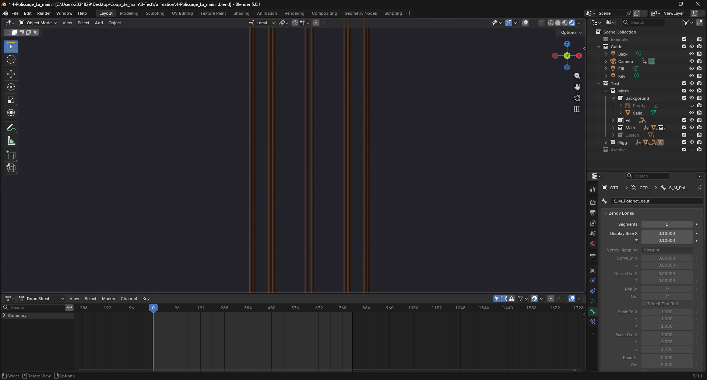
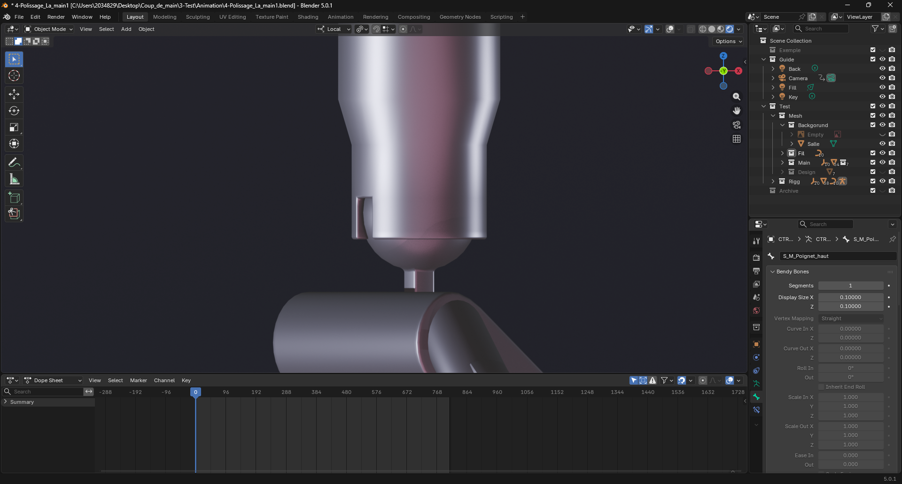
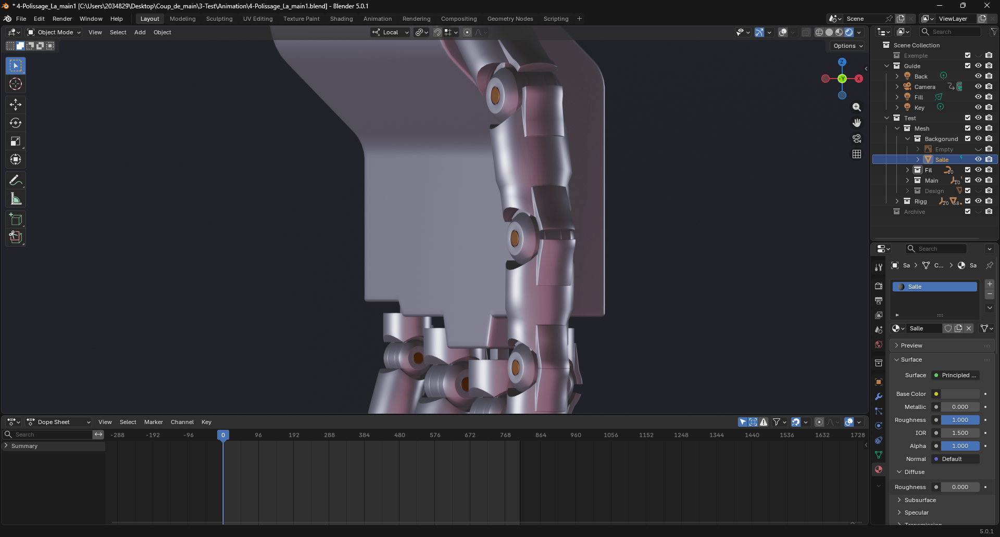
Eclairage
J'ai opté pour un éclairage à trois point car cela met en valeur la main. J'ai mis un key light avec une intensité plus importante que la fill light qui a une couleur plus chaude. La rim light sert uniquement à détacher les contours de la main du fond.
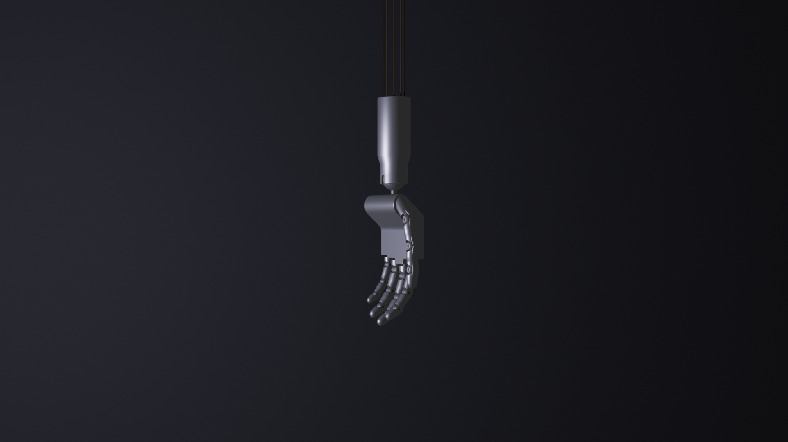
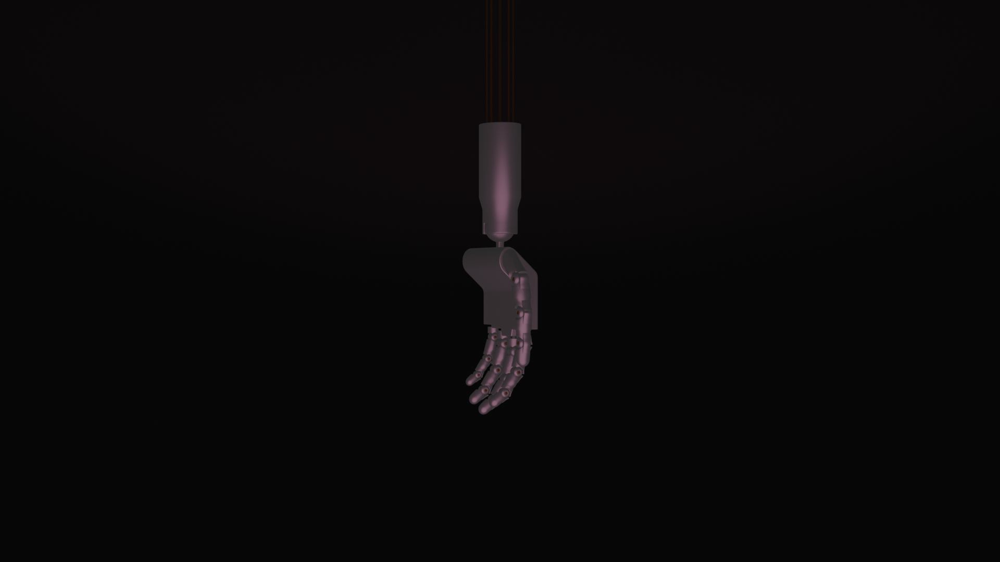
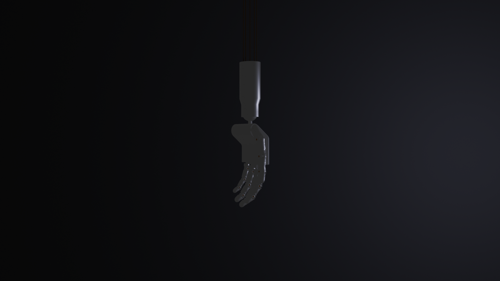